【来来】使用ComfyUI批量高仿AI视频工作流（附带教程+工作流+模型下载）
来源：https://duuxkmjwsy.feishu.cn/docx/Axwvd54VeobBDGxUZZZcGrCdnYf
AI批量高仿视频工作流思路
深度拆解使用ComfyUI这个AI神器，免费高仿1个短视频为例的详细9个步骤。括号中是推荐软件
我尽量使用ComfyUI+开源模型，可实现免费批量生成。
- 下载视频（网站）
- 批量提取视频关键帧图片（老马特供软件）
- AI批量反推提示词（ComfyUI）
- AI批量生成图片（ComfyUI）
- AI批量图片生成视频（ComfyUI）
- AI批量生成音乐/音效（ComfyUI）
- AI批量生成对白/旁白（ComfyUI）
- AI批量视频高清化（ComfyUI）
- 视频剪辑（剪映）
下载视频
首先我们肯定是要找对标视频下载，我列举了很多在线网站，因为大家都懂的原因多列一些以防某个网站打不开。
随意选择1个网站即可，使用方法大同小异，复制YOUTUBE视频链接，点击下载即可。
网站
- https://addyoutube.com/
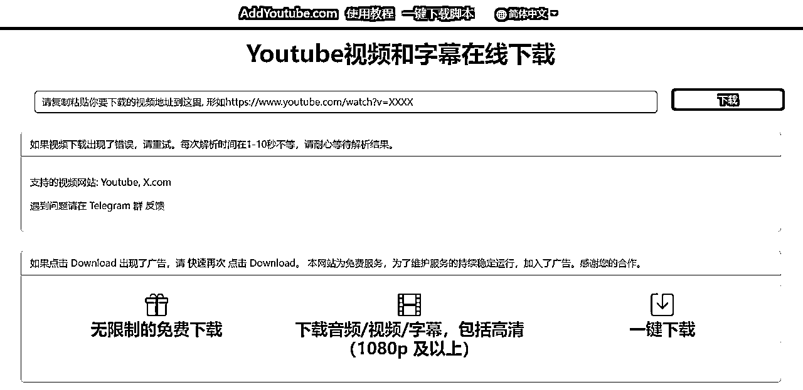
- https://youtube.iiilab.com/
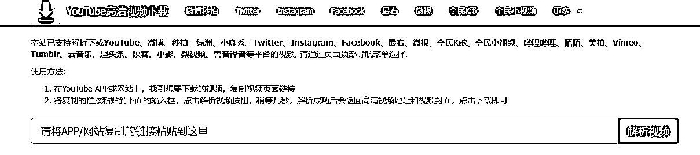
- https://hhm.zzrjcp.com/
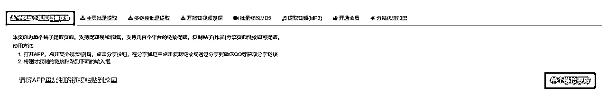
- https://youtube4kdownloader.com/
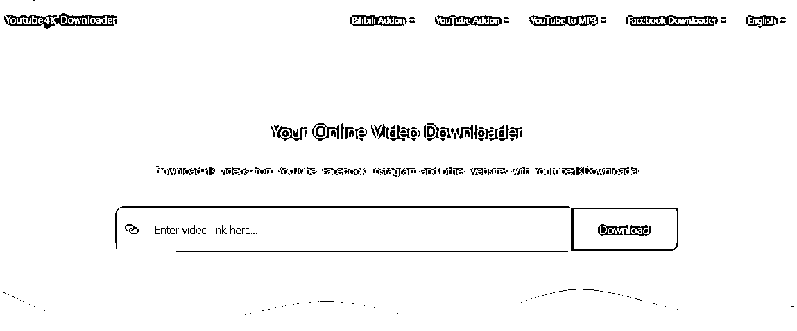
- https://ytshorts.savetube.me/1keen2
- https://y2down.cc/zh/

- https://www.freemake.com/cn/free_video_downloader_best/
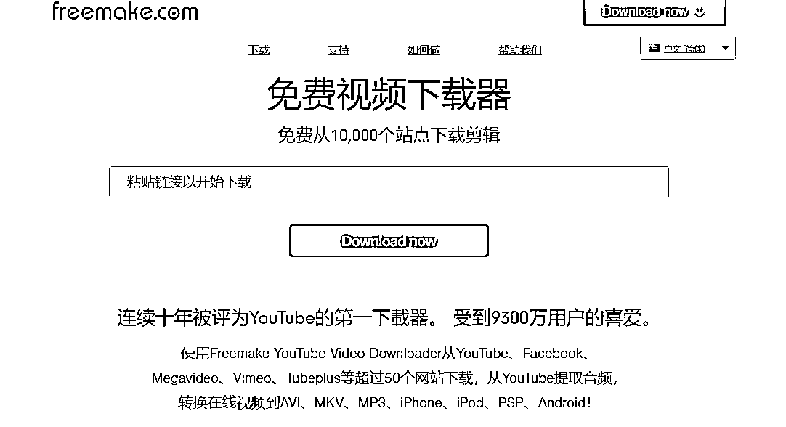
实操
- 我们搜索CAT，会优先展示SHORTS，我选择箭头这个视频，进行后续高仿实操。

- 打开后链接为：https://www.youtube.com/shorts/-AXxWdR74k0
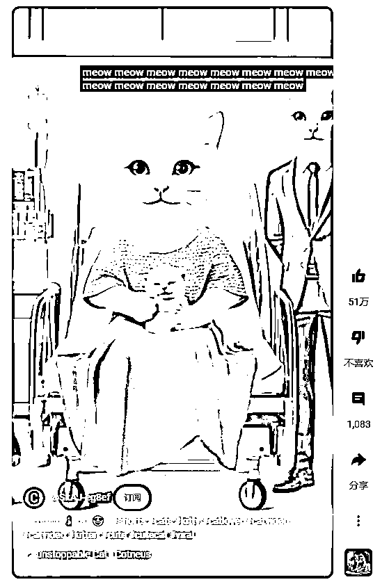
- 复制视频链接到任意一个下载网站点击下载即可获得视频，我以https://addyoutube.com/为例。
批量提取视频关键帧图片
软件
多谢生财圈友 @老馬🐎内容出海 提供的工具。
https://pan.baidu.com/s/1QFVnSLKYSG9nUe4nFE-O1g?pwd=lai6
实操
- 打开软件，自动新建输入和输出两个文件夹，把需要处理的视频放在输入文件夹。

- 参数可以按照默认去设置，点击开始处理即可。会批量处理输入文件夹中所有视频。
- 输出文件夹可以得到一堆关键帧图片，第1张黑屏忽略，第2张和第3张和构图一样忽略，这里我们获得有用关键帧共8张（3~10）。
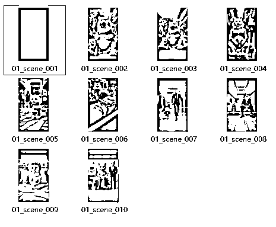
- 如果觉得图片不够多，可以设置时间间隔更短和灵敏度更小。右侧是设置后的结果，但是发现很多重复构图关键帧，所以参数需要根据不同视频自己微调。
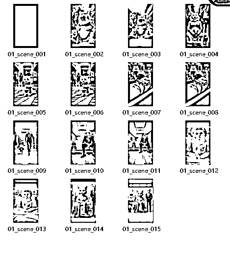
AI批量反推提示词
软件
我们获得了8个关键帧图片，为了方便我重新批量改名了图片“视频名（序号）”。现在我们需要批量反推，这8张关键帧图片的提示词，方便下个环节的AI生成图片。其实chatgpt可以很好的反推出图片提示词，考虑到付费和魔法关系，来来选择使用免费的ComfyUI实现，目前在ComfyUI中可使用多种反推提示词模型，来来以操作最简单的反推模型示范，这个反推模型反推提示词效果中等，但是反推速度较快。
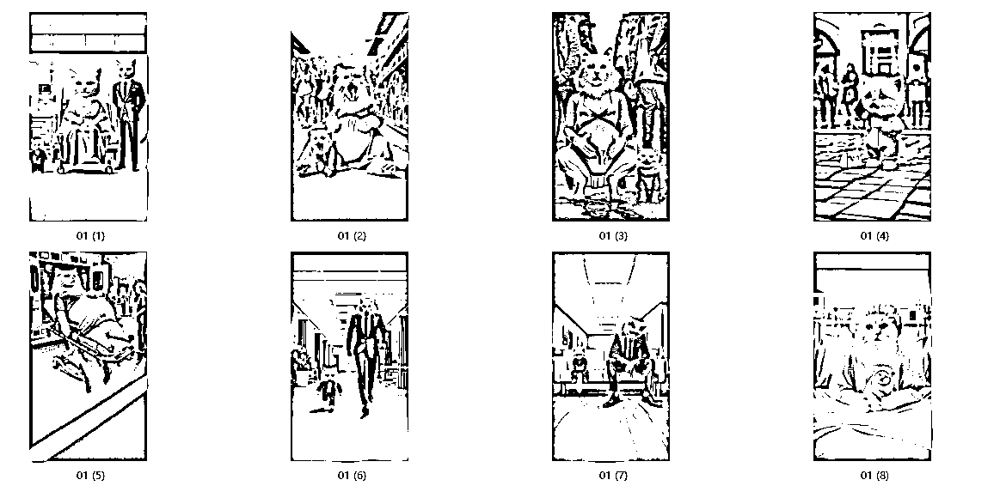
实操
温馨提醒
- 请自己按照教程搭建ComfyUI工作流
- LIB在线ComfyUI，WD14反推提示词节点有BUG，无法显示反推后的提示词，所以本地使用ComfyUI
- LIB在线ComfyUI，不识别文件夹，不支持多张图片批量处理，所以本地使用ComfyUI。
- 需要批量反推提示词，点击第1个YES。
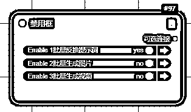
- 单张图片反推，选择加载图像，上传1张图像即可；多张图片反推，选择加载图像（文件夹），左侧文件夹位置粘贴需要处理的文件夹即可
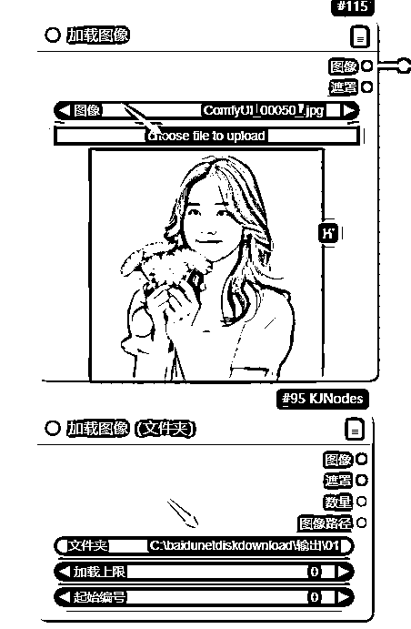
- 右侧任意选择1个模型，建议选择V3结尾的模型效果较好。
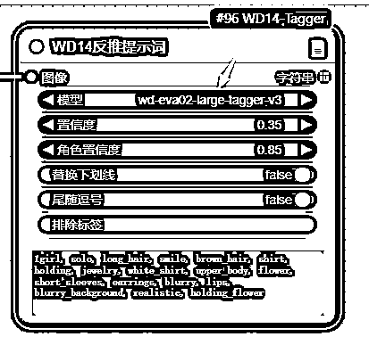
- 点击执行队列，单个图片会直接出现提示词，多个图片会出现文件夹中所有图片的提示词。

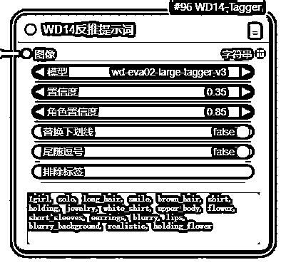
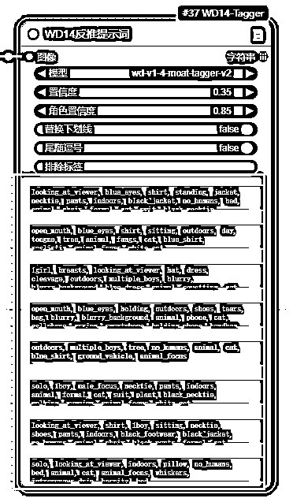
AI批量生成图片
软件
我们已经获得了8个提示词，建议直接使用这8个不同提示词批量使用AI生成图片，来来依然选择使用免费的ComfyUI实现。

实操
温馨提醒
- 请自己按照教程搭建ComfyUI工作流
- LIB在线ComfyUI，不识别文件夹，不支持多张图片批量处理，所以本地使用ComfyUI。
- 这里点击YES

- 加载模型：checkpoint模型不用修改。lora模型可选择FLUX版本的各种风格模型，我选择的是3D风格。原图是皮克斯风格
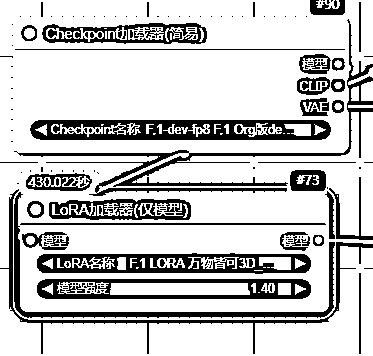
- 设置提示词：使用下面的提示词设置8张为不同提示词
- looking_at_viewer, blue_eyes, shirt, standing, jacket, necktie, pants, indoors, black_jacket, no_humans, bed, animal, chair, formal, cat, suit, black_necktie, animal_focus, black_suit, white_cat, intravenous_drip, hospital_bed, hospital_gown
- open_mouth, blue_eyes, shirt, sitting, outdoors, day, tongue, tree, animal, fangs, cat, blue_shirt, realistic, animal_focus, white_cat
- 1girl, breasts, looking_at_viewer, hat, dress, cleavage, outdoors, multiple_boys, blurry, blurry_background, blue_dress, animal, squatting, cat, green_dress, pregnant, puddle, aqua_dress
- open_mouth, blue_eyes, holding, outdoors, shoes, tears, bag, blurry, blurry_background, animal, phone, cat, cellphone, crying, smartphone, holding_phone, handbag, overalls, animal_focus, white_cat
- outdoors, multiple_boys, tree, no_humans, animal, cat, blue_shirt, ground_vehicle, animal_focus
- solo, 1boy, male_focus, necktie, pants, indoors, animal, formal, cat, suit, plant, black_necktie, walking, running, animal_focus, white_cat
- looking_at_viewer, shirt, 1boy, sitting, necktie, shoes, pants, indoors, black_footwear, black_jacket, no_humans, animal, chair, black_pants, formal, cat, suit, couch, black_necktie, wooden_floor, animal_focus, black_suit
- solo, looking_at_viewer, indoors, pillow, no_humans, bed, animal, cat, animal_focus, whiskers, intravenous_drip, hospital_bed
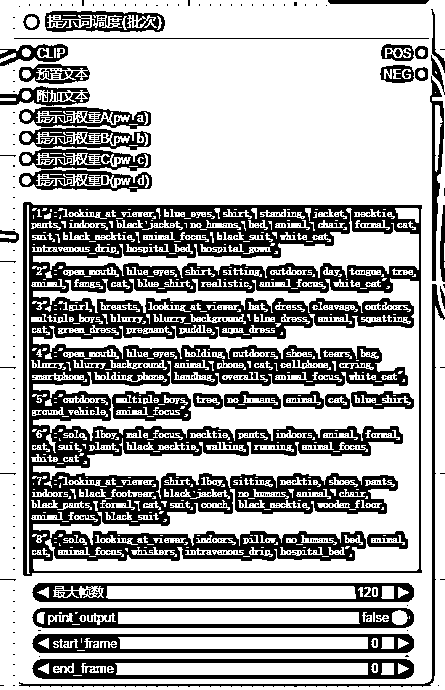
- 修改参数：重点修改图片宽度和高度，批次大小设置为图片总数。其他参数可以默认不用修改。
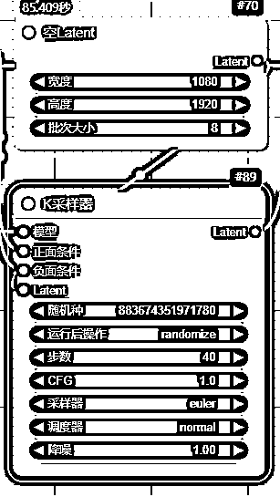
- AI自动生成图片：生成了8张不同提示词内容的图片，这里我们看生成的图片和原图差别很大，其实我是希望实现一点不同的画风。
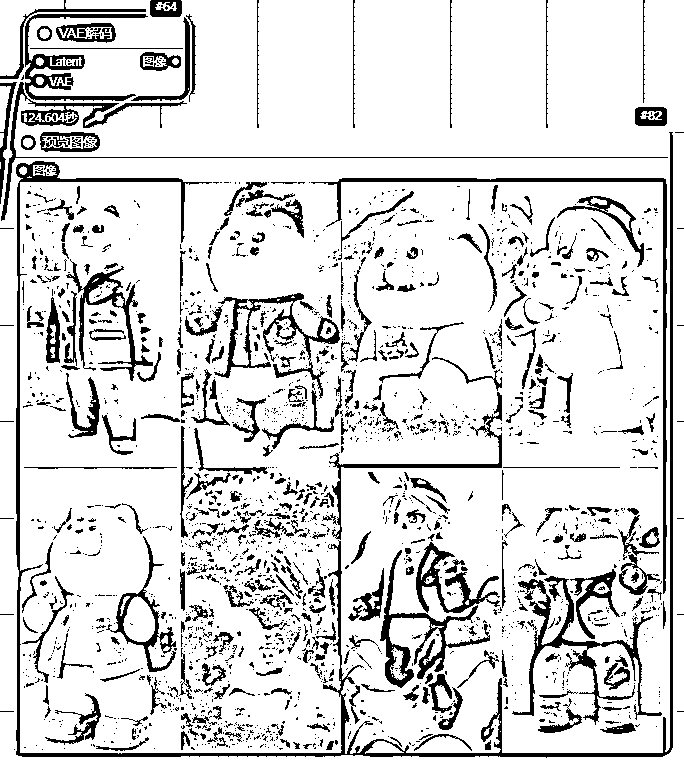
- 如果需要和原始一模一样的画风，更换LORA为皮克斯风格即可。

AI批量图片生成视频
软件
我们已经获得了8个图片，建议直接使用这8个不同图片批量使用AI生成视频，来来依然选择使用免费的ComfyUI实现。
实操
温馨提醒
- 请自己按照教程搭建ComfyUI工作流
- LIB在线ComfyUI，不识别文件夹，不支持多张图片批量处理，所以本地使用ComfyUI。
- 这里点击YES
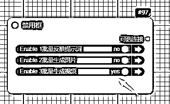
- 加载模型：checkpoint模型不用修改。这里加载的是SVD视频模型
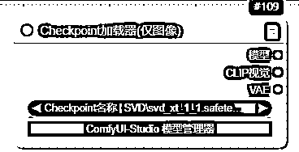
- 加载图片：单张图片点击上方上传加载，多张图片文件夹使用下方节点上传
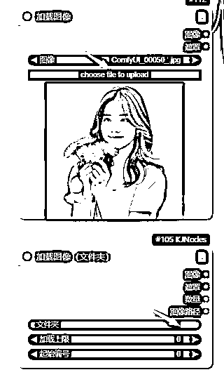
- 修改参数：重点修改视频宽度和高度保持和图片大小一致，批量处理时候确保每张图片大小一致。其他参数默认不用修改。
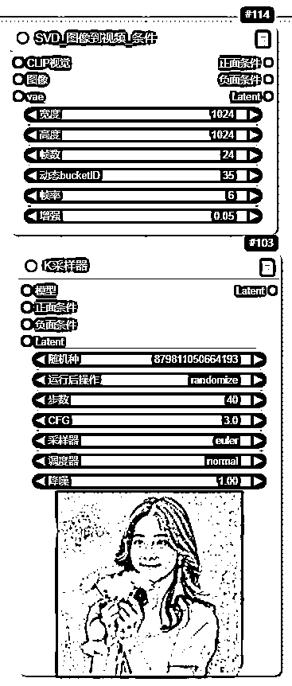
- AI自动生成视频：会自动生成8个视频，这里我们看到视频和原图还原度极高。
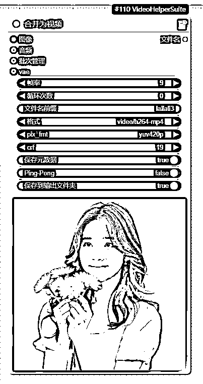
AI批量生成音乐/音效
软件
我们已经获得了8个视频，需要配上一段好听的音乐或者音效，来来依然选择使用免费的ComfyUI实现。
音乐下载实操
- 如果你需要使用原来的背景音乐，可以直接下载原视频的音乐，复制短视频链接：复制视频链接到任意一个下载网站即可，https://www.youtube.com/shorts/-AXxWdR74k，我以https://youtube.iiilab.com/为例，选择下载音频，就可以单独下载原视频的背景音乐和音效。
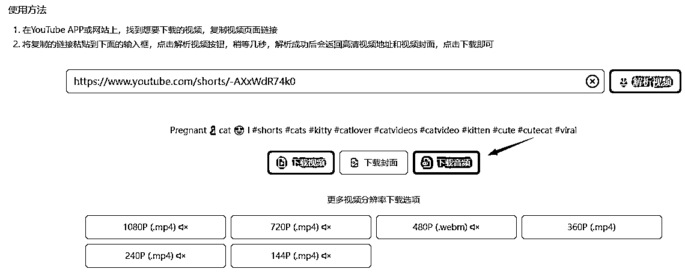
- 获得音乐
音乐生成实操
温馨提醒
- 请自己按照教程搭建ComfyUI工作流
- 加载模型：上面加载stable_audio_open_1.0模型，下面加载t5_base模型
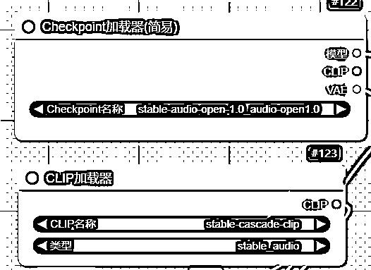
- 设置歌曲的时长和生成数量。
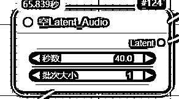
- 设置生成音乐/音效的提示词

提示词参考
轻松的爵士小调：Very relaxing and pleasant jazz music, suitable for vlogs.
蛙鸣：A summer night with many frogs croaking.
雷电交加：Thunder and lightning, accompanied by the sounds of the wind and waves
- 设置参数：默认参数不用修改
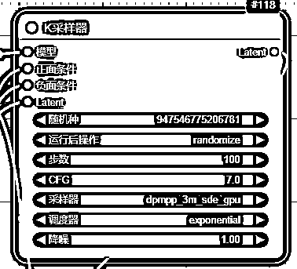
- AI生成音乐：音乐以文件形式存储，请去LIBLIB的图库下载。
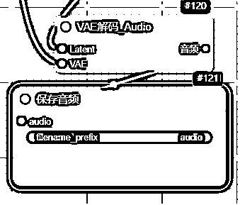
AI批量生成对白/旁白（非必需）
软件
这个步骤并非必须，很多shorts没有对白可以忽略这个步骤。来来依然选择使用免费的ComfyUI实现。
实操
- 下载节点https://github.com/shadowcz007/Comfyui-ChatTTS
- 该节点目前可以创建音色，复用音色，支持多人对话模式的生成，输入的text不需要加[speed_3][laugh_2]这种手动控制的标签。
视频剪辑
这个步骤是必须的，核心就是把视频+音乐剪辑到一起即可。但是ComfyUI中没有找到合适的自动剪辑的
推荐大家用capcut即可，生财有术之前有过视频剪辑的航海建议大家去学习。